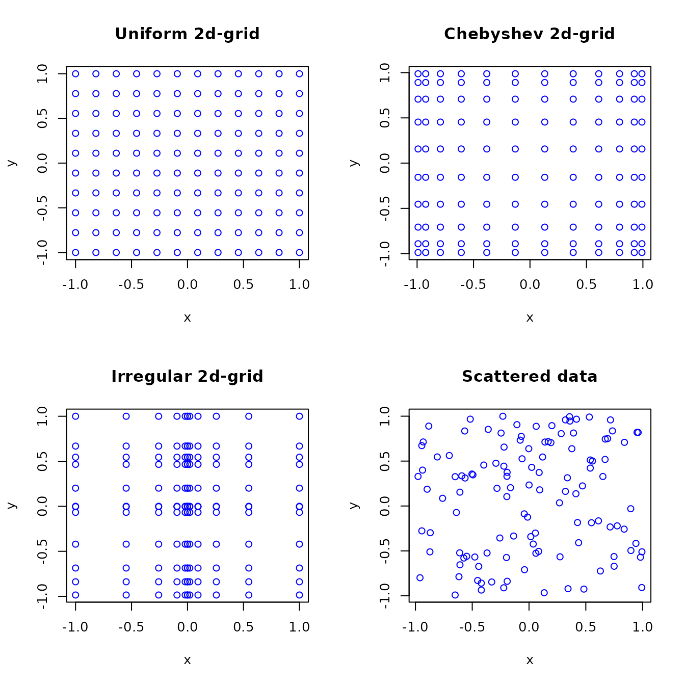
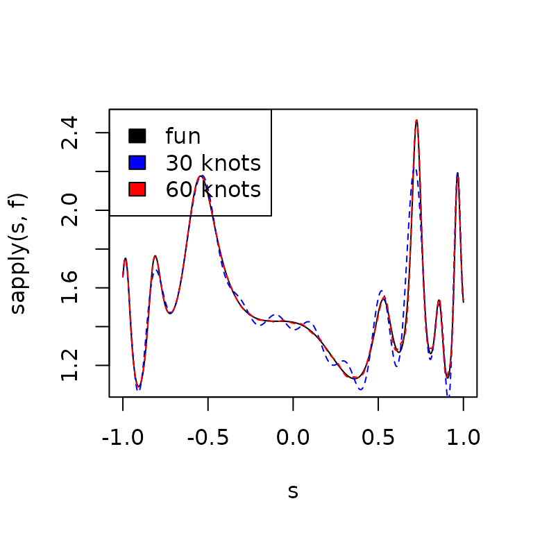
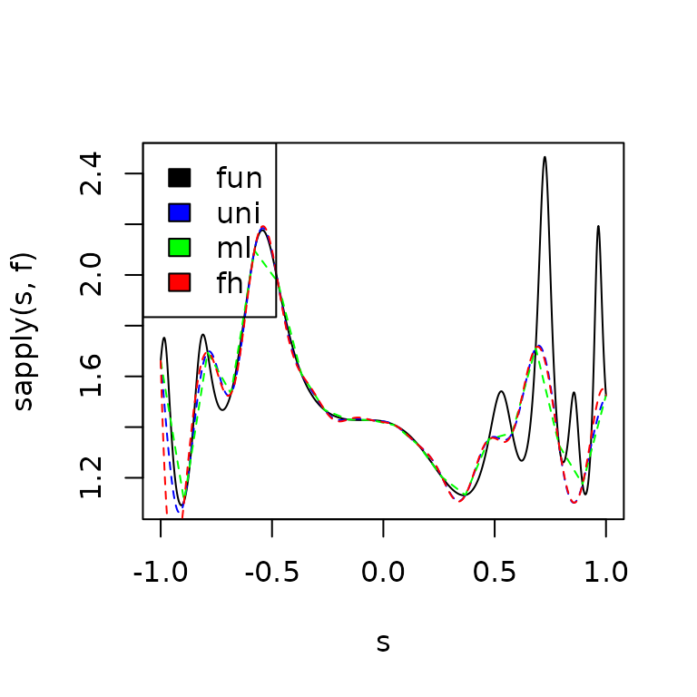
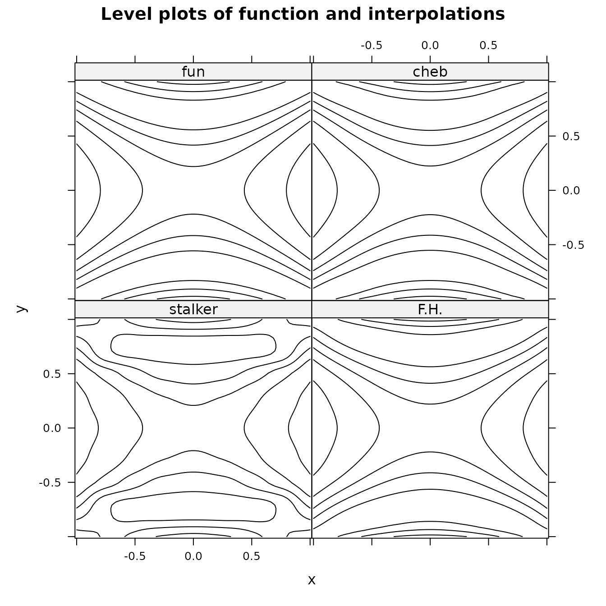
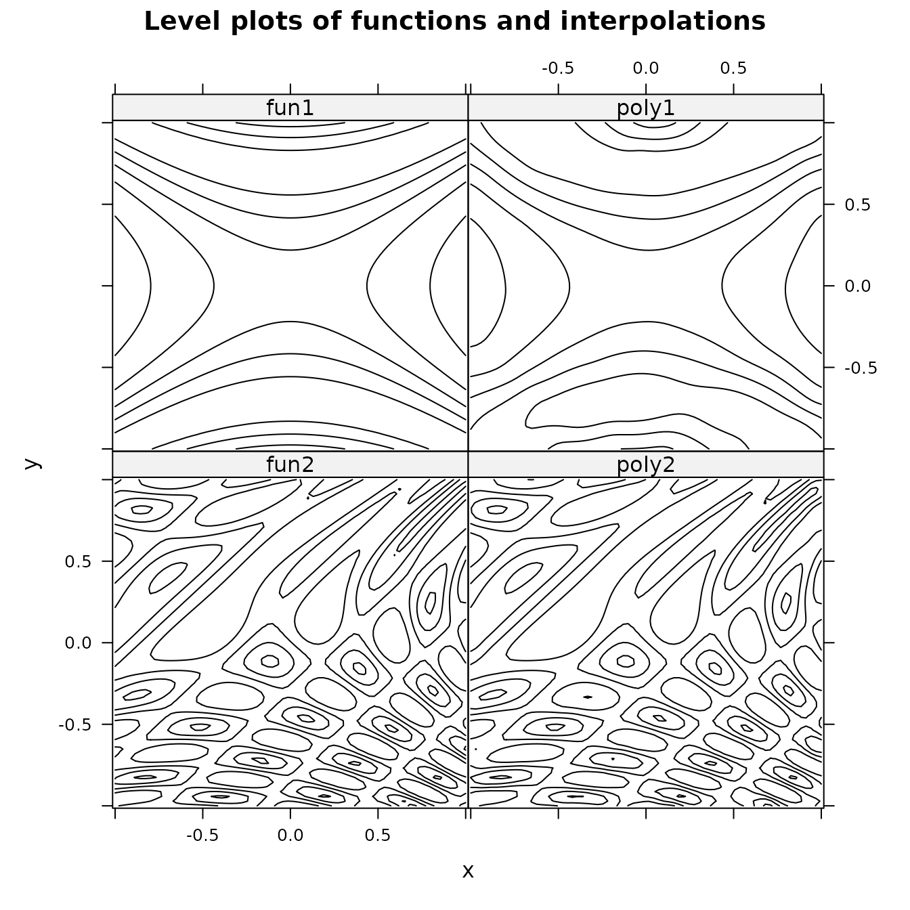
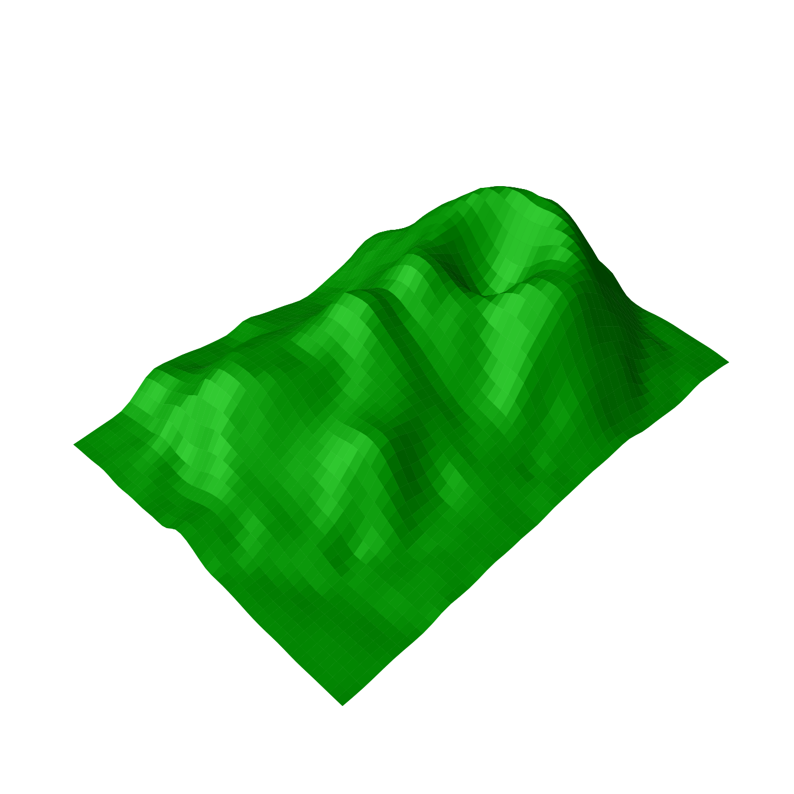
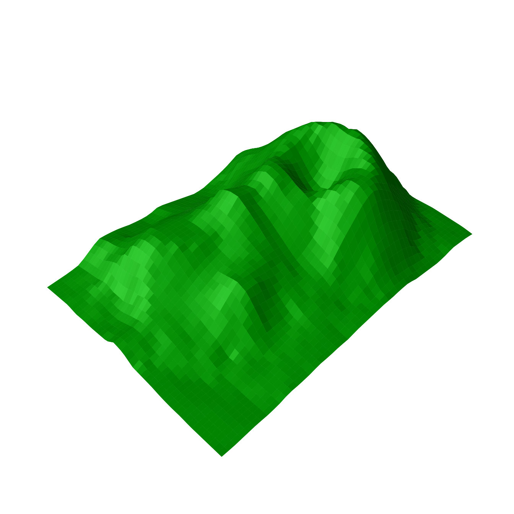

Here are some examples of how package chebpol is used, with description of differences between the methods.
Introduction
Interpolating a function \(f\) means to find a reasonably behaved function, an interpolant \(g\) which agrees with \(f\) on some points. I.e. given \(N \in \mathbb{N}\) we have \(\{x_i\}_{i=1}^N\) in the domain of \(f\), and the interpolant \(g\) satisfies \(g(x_i) = f(x_i)\) for \(1 \le i \le N\). The points \(x_i\) are often referred to as knots.
We limit ourselves to functions \(\mathbb{R}^n \mapsto \mathbb{R}\), or even compactly supported functions \([-1,1]^n \mapsto \mathbb{R}\).
Which method to use depends first and foremost on one thing. Can we choose the points \(x_i\) freely? If \(n > 1\), can we choose the points as a grid, i.e. a Cartesian product of single-dimension points?
Say we have a function \(f(x,y)\) defined in a square, i.e. for \(\{(x,y) \,|\, -1\le x\le 1 \text{ and } -1\le y\le 1\}\). Can we pick our knots exactly as we wish, e.g. as a Cartesian grid \(X \times Y = \{(x,y) \,|\, x \in X \text{ and } y \in Y\}\) for some \(X\) and \(Y\)?
If we want our interpolant \(g\) to be a polynomial, there is a canonical way to do this. The knots should preferably be the Cartesian product of Chebyshev knots. The Chebyshev knots are not uniform, but a special set of knots which cluster near the end points.
If we are not free to choose the knots as we wish, but say we must stick to uniformly spaced knots, say \(X = \{-1, -0.9, -0.8, \ldots, 0.8, 0.9, 1.0\}\), it is not particularly wise to interpolate with a polynomial. The reason is that polynomial interpolants can get gradually worse as the number of knots increases.
Some functions can, for some reason or the other, only be evaluated in irregular grids, or should have a denser grid near certain areas. Some functions can’t be evaluated at all, they only come as values in some scattered points. Here are typical examples in two dimensions.
library(chebpol)
par(mfrow = c(2, 2))
grid <- list(x = seq(-1, 1, length.out = 12), y = seq(-1, 1, length.out = 10))
plot(y ~ x, data = expand.grid(grid), typ = "p", col = "blue", main = "Uniform 2d-grid")
grid <- chebknots(c(x = 12, y = 10))
plot(y ~ x, data = expand.grid(grid), typ = "p", col = "blue", main = "Chebyshev 2d-grid")
grid <- list(x = seq(-1, 1, length.out = 12)^3L, y = sort(c(0, runif(10, -1, 1), 1)))
plot(y ~ x, data = expand.grid(grid), typ = "p", col = "blue", main = "Irregular 2d-grid")
data <- cbind(x = runif(120, -1, 1), y = runif(120, -1, 1))
plot(y ~ x, data = data, typ = "p", col = "blue", main = "Scattered data")
The chebpol package
Since the generalization to multiple dimensions is fairly straightforward, we focus on the one-dimensional case. I.e. functions \([-1,1] \mapsto \mathbb{R}\). We use the following function:
f <- function(x) 1 / mean(log1p(0.5 + sin(0.8 + 2.3 * pi * c(0.6, 1.4) * (x + 0.09)^3)^2))
s <- seq(-1, 1, length.out = 1000)
plot(s, sapply(s, f), typ = "l")Since this is a toy function, we can illustrate all sorts of knots. The first one out is the traditional Chebyshev interpolation. The oscillations are typical for polynomial interpolation with too few knots, that’s how polynomials are.
ch30 <- ipol(f, dims = 30, method = "cheb")
ch60 <- ipol(f, dims = 60, method = "cheb")
plot(s, sapply(s, f), typ = "l")
lines(s, ch30(s), col = "blue", lty = 2)
lines(s, ch60(s), col = "red", lty = 2)
legend("topleft", c("fun", "30 knots", "60 knots"), fill = c("black", "blue", "red"))
We see that with 60 knots we follow the peaks quite well. There is
another thing to note also. We can’t evaluate the function
f in all points at once, with f(s), we must
sapply(s, f). However, the interpolants produced by package
chebpol can evaluate in a series of points. It is even
able to parallelize the evaluation, if you have more than one CPU in
your computing contraption. It’s just to feed it a threads=
argument.
Then, what if we can’t pick Chebyshev knots, but for some reason have
to stick to uniformly spaced knots, say 20 or 40 of them. We then have a
couple of methods to choose from. One is called "uniform"
and is a trigonometric mapping of the uniformly spaced knots into
Chebyshev knots. Another is piecewise linear. Then there is the
Floater-Hormann rational interpolation from (Floater and Hormann 2007). The F.H.
interpolation comes with an integer parameter which is the degree of
certain blending polynomials. In theory it works with any degree below
the number of knots, but in practice high degrees introduce round off
errors, so we better keep it small. We see some of the methods here:
plot(s, sapply(s, f), typ = "l")
uni <- ipol(f, dims = 20, method = "uniform")
grid <- seq(-1, 1, len = 20)
ml <- ipol(f, grid = grid, method = "multilinear")
fh <- ipol(f, grid = grid, method = "fh", k = 3)
lines(s, uni(s), col = "blue", lty = 2)
lines(s, ml(s), col = "green", lty = 2)
lines(s, fh(s, threads = 4), col = "red", lty = 2)
legend("topleft", c("fun", "uni", "ml", "fh"), fill = c("black", "blue", "green", "red"))
Multidimensional data
All of the above methods work with more than one dimension via a
standard tensor product construction, but that presupposes that the
function can be evaluated on a Cartesian grid. The Chebyshev and uniform
methods use particular grids. The method "general" is
similar to "uniform" in that it transforms an arbitrary
Cartesian grid into a Chebyshev grid by means of a monotonic spline in
each dimension. The multilinear and Floater-Hormann methods also work on
arbitrary Cartesian grids.
To illustrate how this works, here is a quite nice function on \([-1,1]^2\) and contour plots of it and the \(9 \times 9\) Chebyshev interpolation, a homegrown “stalker” spline (described in a vignette) and the Floater-Hormann methods on a uniform \(9 \times 9\) grid.
f1 <- function(x) 1.5 / log(5 + sin(pi / 2 * (x[1]^2 - 2 * x[2]^2)))
ch1 <- ipol(f1, dims = c(9, 9), method = "cheb")
igrid <- list(x = seq(-1, 1, len = 9), y = seq(-1, 1, len = 9))
st1 <- ipol(f1, grid = igrid, method = "hstalker")
fh1 <- ipol(f1, grid = igrid, method = "fh", k = 3)
y <- x <- seq(-1, 1, len = 70)
testset <- expand.grid(list(x = x, y = y))
data <- cbind(
testset,
fun = apply(testset, 1, f1),
cheb = ch1(t(testset)),
stalker = st1(t(testset)),
F.H. = fh1(t(testset))
)
lattice::contourplot(
stalker + F.H. + fun + cheb ~ x + y,
data = data,
cuts = 10,
labels = FALSE,
layout = c(2, 2),
main = "Level plots of function and interpolations"
)
The stalker spline is not designed for smooth surfaces, but for following first order features (monotonicity and local extrema) along the grid lines.
There are two interpolation methods we have not mentioned yet. If the data are scattered in two or more dimensions, none of the methods above will work. They need a Cartesian product grid. The chebpol package contains two methods for scattered data also, the most versatile being the polyharmonic spline (see (Hangelbroek and Levesley 2013)). It is parametric with an integer \(k\in\mathbb{N}\). For free we also throw in a Gaussian radial basis function interpolation for negative \(k \in \mathbb{R}^-\). Here we create two functions and plot level plots of them and their polyharmonic interpolations. One of the functions is quite smooth, the other is quite wobbly and requires a lot of scattered points.
f2 <- function(x) 1.2 / mean(log(3.1 + sin(0.7 + 1.8 * pi * (x + 0.39 * x[1]^2 - x[2]^2))^2))
ph1 <- ipol(f1, knots = matrix(runif(200, -1, 1), 2), method = "polyharmonic", k = 2)
ph2 <- ipol(f2, knots = matrix(runif(4000, -1, 1), 2), method = "polyharmonic", k = 3)
data <- cbind(
testset,
fun1 = apply(testset, 1, f1),
poly1 = ph1(t(testset)),
fun2 = apply(testset, 1, f2),
poly2 = ph2(t(testset))
)
lattice::contourplot(
fun2 + poly2 + fun1 + poly1 ~ x + y,
data = data,
cuts = 10,
labels = FALSE,
layout = c(2, 2),
main = "Level plots of functions and interpolations"
)
# compute L2-error (rmse)
sqrt(
cubature::hcubature(
function(x) as.matrix((ph2(x) - apply(x, 2, f2))^2),
rep(-1, 2),
rep(1, 2),
vectorInterface = TRUE,
absError = 1e-6
)$integral /
4
)## [1] 0.002616991The polyharmonic spline method is quite slow. It requires solving a \(K \times K\) dense linear system, where \(K\) is the number of knots. It helps a lot to use a tuned and parallel BLAS with R, such as Intel’s MKL.
In Figure 1 are various interpolated 3d-pictures of the Maungawhau volcano (Mt. Eden, Auckland, New Zealand). We illustrate the other method which works on scattered data, it is piecewise linear on triangles (more generally on simplices).
data(volcano)
volc <- volcano[seq(1, nrow(volcano), 3), seq(1, ncol(volcano), 3)] / 10 #low res volcano
grid <- list(x = seq_len(nrow(volc)), y = seq_len(ncol(volc)))
fh <- ipol(volc, grid = grid, method = "fh", k = 0)
knots <- t(expand.grid(grid))
sl <- ipol(volc, knots = knots, method = "simplex")
ph <- ipol(volc, knots = knots, method = "polyharmonic")
g <- list(x = seq(1, nrow(volc), len = 50), y = seq(1, ncol(volc), len = 50))
par(mar = rep(0, 4))
col <- "green"
light <- list(specular = 0.2, ambient = 0.0, diffuse = 0.6)
plot3D::persp3D(
grid$x,
grid$y,
volc,
colvar = NULL,
lighting = light,
theta = 135,
ltheta = 90,
lphi = 40,
col = col,
axes = FALSE,
bty = "n",
scale = FALSE
)
for (f in list(ph, fh, sl)) {
plot3D::persp3D(
g$x,
g$y,
evalongridV(f, grid = g),
colvar = NULL,
lighting = light,
theta = 135,
ltheta = 90,
lphi = 40,
col = col,
axes = FALSE,
bty = "n",
scale = FALSE
)
}

Figure 1: Volcanoes (top left: low resolution, top right: polyharmonic, bottom left: Floater-Hormann, bottom right: simplex)
Speed considerations
There are two parts to interpolation. Creating the interpolant, and using it. Both of these take some time. The time depends on the method, as well as the dimension \(r\) of the problem, and the number of grid points \(n\) along a dimension, or the number of knots \(K\). For the Cartesian grids, the number of knots is \(n^r\).
Traditionally, Chebyshev interpolation has been favoured for two reasons. The Chebyshev interpolation is the right way to do polynomial interpolation, due to certain analytical facts. The Chebyshev coefficients can also be calculated by a (possibly multi dimensional) Fast Fourier Transform (FFT). This is much faster than solving a large linear system which is the pedestrian approach for finding polynomial interpolants. chebpol uses the FFT from the software package FFTW, if it was available during compilation. Otherwise a slower matrix method is used. Creation with FFT typically takes of the order \(O(n^r\log n)\). The evaluation of Chebyshev interpolants is not particularly fast, chebpol uses the Clenshaw algorithm, which is a variant of Horner’s method for evaluating polynomials. It typically goes in time \(n\) for each dimension, but they must be combined, so \(O(n^r)\).
The multilinear interpolation is the fastest in chebpol. Creating the interpolant takes little time at all, the grid and function values are saved, as is, that’s all. Evaluation consists of computing a convex combination of the function values in the corners of the surrounding hypercube. Typically an \(O(\log n)\) task for each dimension, but there are \(2^r\) corners for an \(r\)-dimensional problem, so \(O(r 2^r +r\log n)\).
The stalker and hyperbolic stalker interpolations are also local methods which are quite fast, both to create and to evaluate. They have the same complexity as the multi linear, but slower by some constant.
Creation of the Floater-Hormann interpolation requires calculating the weights, roughly an \(O(rn^2)\) task. Evaluation is \(O(n^r)\). Quite similar to the Chebyshev method.
The polyharmonic spline method is the most demanding. Creation requires calculating some weights which amounts to solving a dense \(K\times K\) linear system, an \(O(K^3)\) task (or \(O(n^{3r})\) to compare with the grid methods). Evaluation is faster, of the order \(O(Kr)\) (or \(O(rn^r)\)).
Creation of the simplex linear interpolation requires calculation of
the Delaunay triangulation of the knots. This is usually quite fast,
using the qhull library (http://www.qhull.org) available through package
geometry. Evaluation requires finding the enclosing
simplex of the point. The simplices are indexed by a grid over the
knots, so only those whose bounding box overlaps the grid cell of the
point are examined, by verifying that the barycentric coordinates of the
point are in \([0,1]\). In up to three
dimensions the time per point does not grow with the number of knots. In
higher dimensions the grid helps less, and both creation and evaluation
are markedly slower due to exceedingly high numbers of simplices.
To alleviate speed problems, parts of chebpol has
been parallelized with OpenMP. The number of threads is taken from
getOption("chebpol.threads") which is initialized from the
environment variable CHEBPOL_THREADS. It defaults to 1.
Some of the creation routines use parallelization, however the
polyharmonic spline does not. It depends on the underlying BLAS for
solving the system, of course it helps if it is optimized and
parallel.
Evaluation of the interpolants are parallelized if one evaluates more than one point. I.e. the interpolants can take a matrix of column vectors, and may calculate values in parallel:
## [,1] [,2] [,3] [,4] [,5] [,6]
## [1,] -0.9711147 0.04088274 -0.2114722 -0.3162226 -0.1854045 0.1936394
## [2,] -0.1570820 -0.52174500 -0.9379660 -0.1015732 0.6033676 0.6767862
print(ph2(m, threads = 3))## [1] 0.9369171 0.9713621 0.9770991 0.9693429 0.9133033 0.9146778This means that even if one has a function available in R, it might
be faster to use an interpolant since it’s automatically parallelized.
Even if one does not have more than one CPU, it is worthwhile to use the
matrix interface if more than one point is to be evaluated (such as in
the vector interface of package cubature), it is a lot
faster with ph2(m) than with
apply(m, 2, ph2).
f <- ipol(sin, grid = seq(-pi, pi, length.out = 1000), method = "hstalker")
a <- runif(1e6)
system.time(sin(a))## user system elapsed
## 0.011 0.001 0.012
system.time(f(a, threads = 8))## user system elapsed
## 0.100 0.000 0.027